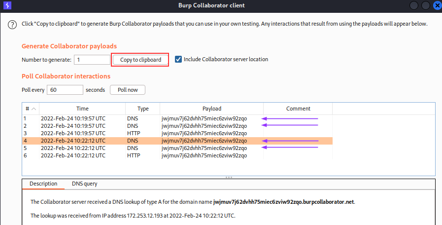
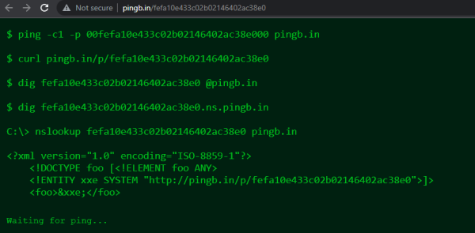
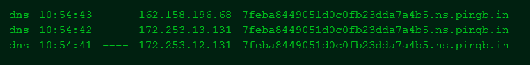

Blind SSRF vulnerabilities
Blind SSRF vulnerabilities arise when an application can be induced to issue a back-end HTTP request to a supplied URL,
but the response from the back-end request is not returned in the application's front-end response.How to find and exploit blind SSRF vulnerabilities
The most reliable way to detect blind SSRF vulnerabilities is using out-of-band (
OAST) techniques.
Out-of-band application security testing (OAST) uses external servers to see otherwise invisible vulnerabilities.
To detect if a backend service is processing our requests, we can either use a server with a public IP address that we own or services such as:
•
Burp Collaborator (Part of Burp Suite professional. Not Available in the community edition)
•
http://pingb.in/Burp CollaboratorThe easiest and most effective way to use out-of-band techniques is using
Burp Collaborator. You can use the
Burp Collaborator client to generate unique domain names, send these in payloads to the application, and monitor for any interaction with those domains. If an incoming HTTP request is observed coming from the application, then it is vulnerable to SSRF.
 Note: It is common when testing for SSRF vulnerabilities to observe a
DNS look-up for the supplied Collaborator domain, but no subsequent HTTP request.
This typically happens because the application attempted to make an HTTP request to the domain, which caused the initial
DNS lookup, but the actual HTTP request was blocked by network-level filtering. It is relatively common for infrastructure to allow outbound DNS traffic, since this is needed for so many purposes, but block HTTP connections to unexpected destinations.
pingb.in
This is the page that is opening when we go to:
http://pingb.in/ with
http://pingb.in/[randomstring]
This show us various way with we can contact the webpage
ping [randomstring].ns.pingb.in
*update the pingb page if we do not get nothing
Bibliography:
•
https://portswigger.net/web-security/ssrf•
https://portswigger.net/web-security/ssrf/blind•
https://portswigger.net/research/cracking-the-lens-targeting-https-hidden-attack-surface#remoteclient•
https://portswigger.net/research/cracking-the-lens-targeting-https-hidden-attack-surface#aux•
Bug Bounty Bootcamp: The Guide to Finding and Reporting Web